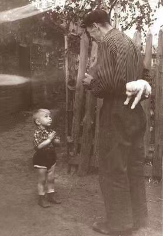

About Me
Hi!我也有自己的网站啦(#^.^#)。包括我的论文，课程大作业，CUPT项目等等。也希望将自己三年间的一些作品与思考分享给大家，特别是三门人文课程的结课论文，我都花了很大的心血，希望可以给大家一个参考
Publications
- Shu Luo*,Chenghao Li, The black hole shadow of quantum Oppenheimer-Snyder–de Sitter
spacetime, Physical Review D, 110, 124042 (2024).
- Chenghao Li, Nianjia Zhang, Qiwen Zhan*,Observation of the spatio-temporal coupling of Airy wave
packets , To be submitted to Nature Communications
